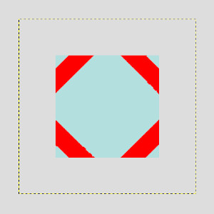
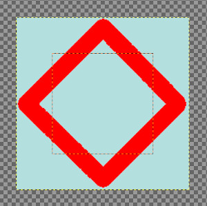
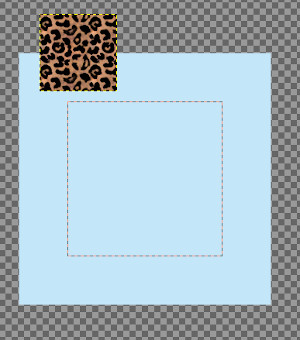
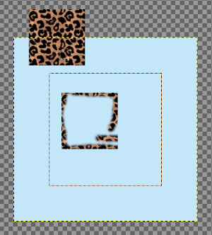

|

|
 |
| 5.2. New View |

|
5.4. Dot for Dot |
The command makes all pixels visible that are outside the canvas and that are normally not part of the image. This allows you to drag new layers and images outside the canvas temporarily to work with them.
When you just open an image, the canvas size is the same as the image size, and applying the “Show all” command, of course, gives nothing since there is no pixel outside the canvas. So, enlarge the layer using the Scale tool.
This default behavior of “Show All” being disabled when opening a new image window, can be changed in the Image Window Preferences, by changing the default for “Show All”.
Figure 16.37. Show All

Layer enlarged. Command not checked.

Layer enlarged. Command checked.
When the “Show all” command is unchecked, pixels spilling off the canvas boundary are not visible.
When the command is checked, all pixels outside the canvas are visible (if the layer size is enough). You can see:
The canvas boundary as a red dotted line. You can paint outside the canvas, in the limit of the layer. Changes made outside the canvas are not exported with the image, unless you enlarge the canvas size using Canvas Size.
The layer boundary as a yellow dotted line.
A large checkerboard area indicating there is no pixel.
The checkerboard area is infinite: whatever the image window size, it persists.
We will clone from a new image onto the image.
Open your image, check “Show All”, and enlarge layer.
Open the new image. A new layer is created for this new image. Click and drag this new layer onto your image. Use Move tool to put the new image outside canvas.

Make new layer active. Use Clone tool and Ctrl-click on the new image to make it the source.
Make image layer active. Paint on your image to clone the source. You see that pixels in checkerboard area are cloned.
